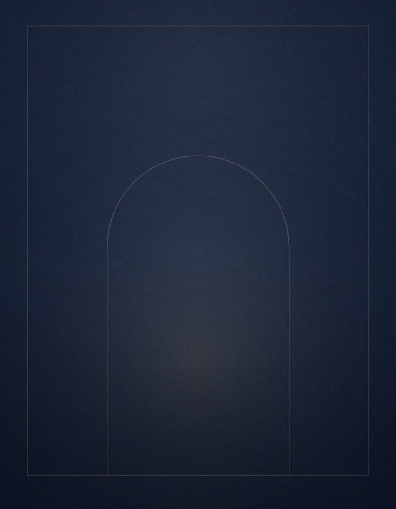

Una vida construyendo instituciones que perduran: entre la academia, la empresa y el deporte, a ambos lados del Atlántico.
Fabeka Lebrón construye instituciones y forma personas. Tres décadas tendiendo puentes entre la educación, la empresa y el deporte, a ambos lados del Atlántico, la han hecho especialista en un oficio preciso: convertir lo vivido en instituciones que duran y lo aprendido en categoría enseñable.
Preside Keicher Group y su unidad de diplomacia económica, Iberoamerican Bridges, desde la que tiende puentes entre gobiernos, empresas, universidades e instituciones deportivas de Europa y América. Forma parte del Consejo Asesor Internacional de CEAPI, Consejo Empresarial Alianza por Iberoamérica.

Fundó Caribbean Futbol Club, entidad de Barça Academy República Dominicana, y creó la Barça Academy Copa Las Américas, que reúne cada diciembre en el Caribe a academias de tres continentes. Es socia fundadora y consejera de MIC Football Punta Cana. Respalda desde su origen el IESE Sports Management Center, en Barcelona, como Founding Member.
Fue investida como Académica de Honor de la Real Academia Europea de Doctores en Barcelona, el 17 de noviembre de 2026, con el discurso de ingreso El lenguaje universal del deporte · De la cancha a la diplomacia económica. Sirve en el Consejo para Iberoamérica de la Academia como Embajadora Extraordinaria y convoca el Congreso Internacional RAED · Retos Vitales, con edición inaugural en Santo Domingo en 2027. Es autora de Santo Domingo, parques para la vida (PNUD – Ayuntamiento del Distrito Nacional, 2026) y dirigió su sistematización. Entre 2018 y 2023 dirigió, como Consejera Delegada, FC Barcelona Brasil, en São Paulo, e impulsó la creación del primer club formador del FC Barcelona fuera de España. Fundó Barna Business School, en Santo Domingo, y fue su primera Rectora; presidió su Consejo Académico Empresarial.
Ejerce desde consejos y órganos de gobierno a ambos lados del Atlántico, escribe Memorias Profesionales y acompaña, un año y una persona, a quien cambia de etapa. Se formó en IESE Business School, EADA Business School y la Pontificia Universidad Católica Madre y Maestra. La educación, el deporte y la cultura ordenan su trayectoria entera. Vive entre Barcelona, São Paulo y Santo Domingo. Su divisa: las instituciones valen lo que vale su gente.
Barcelona · São Paulo · Santo Domingo